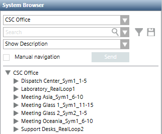

User-Defined View
A user-defined view lets you define the site-specific structure in a top-down fashion: starting with the largest item in the view, such as a campus or a building, and then moving down to insert components in these large structures (for example, buildings into the campus, floors into buildings, sections into floors, and rooms into sections). If necessary, use a generic aggregator, at any point, to create additional structures.
When the structure is ready, connect the logical part by linking a logical subtree to a room (or to a generic point). The resulting tree will provide operators with an easier way to navigate through the familiar structures of a building down to the individual elements. For example, a zone can be linked to a room or an entire section can be linked to a generic point, representing a building floor. In the link, you can decide to connect individual physical or logical objects (such as, the zone point) or an entire subtree.
Depending on the event definitions, alarms may be presented with a maximum level of detail (for example, a sensor warning). Or they can also be applied to a higher view level (for example, sections, floors, building, and so on), and show a general category (for example, Life Safety). This is due to the system propagation characteristics.
One of the most common use cases for a user-defined view is the geographical view, which allows the operators to navigate and manage the system according to the physical layout of the location they are familiar with. These views include nodes belonging to the management level and representing geographical entities (such as Buildings, Floors, Rooms, and so on); they can also include several devices (of different disciplines) all represented in the location where they are actually installed.
